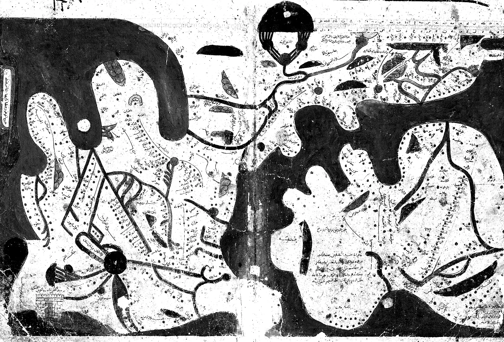
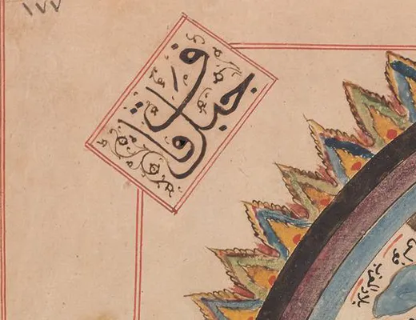

Katıl
Kuluçkaya katılmanın altı yolu
Bir projen varsa başvur, yoksa birine katıl. Geliştirici, tasarımcı, araştırmacı, hukukçu ya da çevirmen olarak işin var.
Katılım yolları
Projeni getir
Bir sorunu çözen bir fikrin ya da başlamış bir projen varsa kuluçkaya başvur.
Proje başvurGönüllü ol
Becerini yaz; uygun bir projeyle eşleşirsin.
Gönüllü formunu doldurMentor ol
Proje kurmuş, ürün çıkarmış ya da bir alanda uzmanlaşmış biri olarak bir ekibe ayda birkaç saat ayır.
Mentorluk için yazBir fikri üstlen
Çalışma gruplarının yazdığı, ekip bekleyen fikirlerden birini seç.
Proje fikirlerini görHackathona katıl
Birkaç günde bir takımla çalışan bir örnek yaz.
Hackathon programını okuBültene abone ol
Yeni projeler, açılan roller ve hackathon tarihi e-postana gelir.
Bülten kutusuna git
Gönüllü formu
Ne yapabildiğini ve ne kadar zaman ayırabileceğini yaz. Uygun bir proje çıktığında sana yazılır.
- Rol arayan projeler
Ağ Haritası, Tebliğ Arşivi, Dava İzleme ve dört proje daha.
Mentorluk
Mentor, bir ekiple ayda birkaç saat görüşür ve tıkandıkları yerde yol gösterir. Kod incelemesi, ürün, hukuk ya da araştırma alanında olabilir.
- Ne kadar zaman
Ayda iki görüşme ve yazışma.
- Kimlerle
Bir ya da iki proje ekibi.
- Nasıl başlar
Alanını ve deneyimini yaz; uygun bir proje çıktığında tanıştırılırsın.